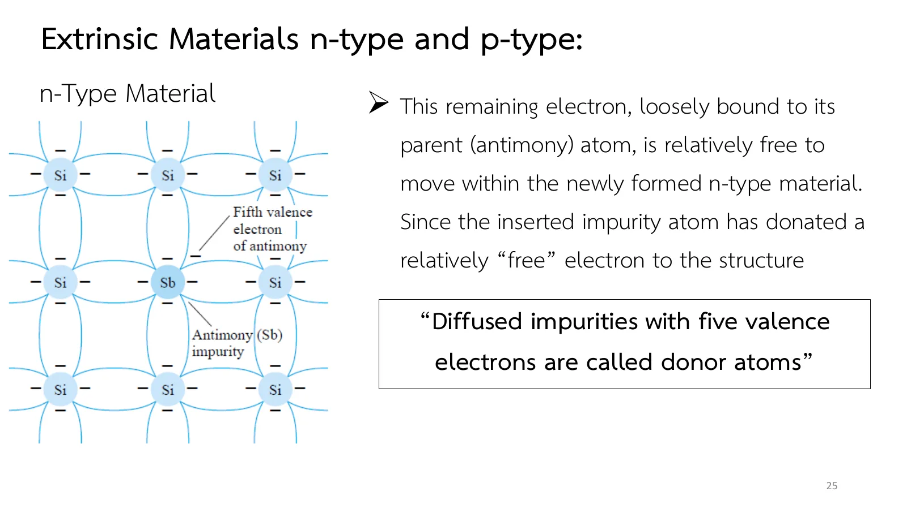
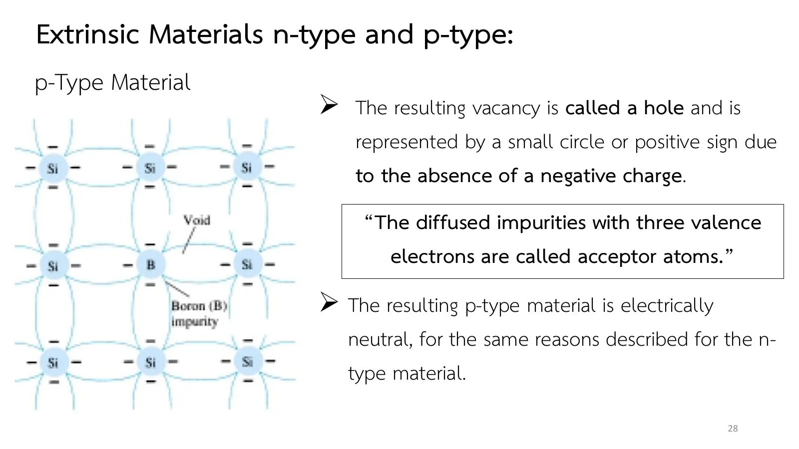

สารกึ่งตัวนำชนิด n และชนิด p: เติมสารเจือแล้วอะไรเปลี่ยน n-type and p-type materials: what doping changes
n-type and p-type materials What doping changes
สารกึ่งตัวนำบริสุทธิ์ยังนำไฟฟ้าไม่ดี แต่ถ้าเติมอะตอมแปลกปลอม (impurity) เพียงหนึ่งส่วนในสิบล้านส่วน สมบัติทางไฟฟ้าจะเปลี่ยนไปอย่างสิ้นเชิง กระบวนการนี้เรียกว่าการเจือสาร (doping) และวัสดุที่ได้เรียกว่าสารกึ่งตัวนำไม่บริสุทธิ์ (extrinsic material) สไลด์หน้า 23–31 อธิบายวัสดุชนิด n ชนิด p การไหลของโฮลเทียบกับอิเล็กตรอน และพาหะข้างมากกับข้างน้อย หน้านี้มีภาพจำลองการเจือสาร (ส่วน A) การไหลของโฮล (ส่วน B) พาหะข้างมากและข้างน้อย (ส่วน C) โจทย์ข้อ 1 และแบบฝึกเพิ่ม
A pure semiconductor is still a poor conductor, but add foreign atoms (impurities) at only one part in ten million and its electrical properties change completely. The process is called doping, and the result an extrinsic material. Slides pp. 23–31 cover n-type and p-type material, hole flow against electron flow, and majority and minority carriers. This page has doping (section A), hole flow (section B), majority and minority carriers (section C), problem 1 and more practice.
ประเด็นสำคัญของหน้านี้
- ชนิด n: อะตอมที่มีเวเลนซ์อิเล็กตรอนห้าตัว (หมู่ V: พลวง Sb, สารหนู As, ฟอสฟอรัส P) ใช้สี่ตัวสร้างพันธะ เหลือตัวที่ห้าที่ยึดไว้หลวม ๆ หลุดเป็นอิสระได้ง่าย อะตอมนี้ "ให้" อิเล็กตรอน จึงเรียกว่าโดเนอร์ (donor) (สไลด์หน้า 24–25)
- ระดับโดเนอร์: อิเล็กตรอนตัวที่ห้าอยู่ในระดับพลังงานใต้แถบนำเพียงราว 0.05 อิเล็กตรอนโวลต์ (electron volt, eV) ในซิลิคอน ที่อุณหภูมิห้องจึงขึ้นไปแถบนำได้แทบทุกตัว การนำไฟฟ้าเพิ่มขึ้นมาก (สไลด์หน้า 26)
- ชนิด p: อะตอมที่มีเวเลนซ์อิเล็กตรอนสามตัว (หมู่ III: โบรอน B, แกลเลียม Ga, อินเดียม In) สร้างพันธะได้ไม่ครบ ช่องว่างที่เหลือคือโฮล ซึ่ง "รับ" อิเล็กตรอนได้ง่าย อะตอมนี้จึงเรียกว่าแอกเซปเตอร์ (acceptor) วัสดุทั้งสองชนิดยังเป็นกลางทางไฟฟ้า (สไลด์หน้า 27–28)
- โฮลเคลื่อนที่สวนทางกับอิเล็กตรอน: เวเลนซ์อิเล็กตรอนกระโดดเข้าโฮลไปทางขวา โฮลจึงย้ายไปทางซ้าย ทิศของกระแสในตำราคือทิศของกระแสสมมติ ซึ่งตรงกับทิศการไหลของโฮล (สไลด์หน้า 29)
- พาหะข้างมากและข้างน้อย: ในชนิด n อิเล็กตรอนเป็นพาหะข้างมาก โฮลเป็นพาหะข้างน้อย ในชนิด p กลับกัน วัสดุชนิด n และ p คือชิ้นส่วนพื้นฐานของอุปกรณ์สารกึ่งตัวนำทุกชนิด (สไลด์หน้า 30–31)
Key points of this page
- n-type: an atom with five valence electrons (Group V: antimony Sb, arsenic As, phosphorus P) uses four for bonds and keeps a loosely bound fifth one that breaks free easily. It "donates" an electron, so it is called a donor (slides pp. 24–25).
- The donor level: the fifth electron sits only about 0.05 electron volts (eV) below the conduction band in silicon, so at room temperature almost every one is up in the conduction band, and the conductivity rises a great deal (slide p. 26).
- p-type: an atom with three valence electrons (Group III: boron B, gallium Ga, indium In) cannot complete its bonds; the vacancy left is a hole, which readily "accepts" an electron, so the atom is called an acceptor. Both materials stay electrically neutral (slides pp. 27–28).
- Holes move against the electrons: valence electrons jump into a hole towards the right, so the hole moves to the left. The current direction of the book is conventional current, the direction of hole flow (slide p. 29).
- Majority and minority carriers: in n-type material electrons are the majority carriers and holes the minority; in p-type the other way round. n- and p-type materials are the building blocks of every semiconductor device (slides pp. 30–31).
![Slide 23, Extrinsic Materials n-type and p-type: the characteristics of semiconductor materials can be altered significantly by the addition of certain impurity atoms into the relatively pure semiconductor material. Only added to perhaps 1 part in 10 million, can alter the band structure sufficiently to totally change the electrical properties of the material. Quote: A semiconductor material that has been subjected to the doping process is called an extrinsic material. There are two extrinsic materials of immeasurable importance to semiconductor device fabrication: n-type and p-type.](slides/ch1/p23.webp)
เติมโดเนอร์หรือแอกเซปเตอร์ลงในผลึกซิลิคอน
Put a donor or an acceptor into a silicon crystal
![Slide 24, Extrinsic Materials n-type and p-type, n-Type Material: the n-type is created by introducing those impurity elements that have five valence electrons (pentavalent), such as antimony (Sb), arsenic (As) and phosphorus (P). The four covalent bonds are still present. There is, however, an additional fifth electron due to the impurity atom, which is unassociated with any particular covalent bond. Figure: a 3 by 3 grid of Si atoms with an Sb atom in the centre and its fifth valence electron marked.](slides/ch1/p24.webp)

![Slide 26, Extrinsic Materials n-type and p-type, n-Type Material: the effect of this doping process on the relative conductivity can best be described through the use of the energy-band diagram of the figure. Note that a discrete energy level (called the donor level) appears in the forbidden band with an E_g significantly less than that of the intrinsic material. Figure: conduction band, a dashed donor energy level just below it with E_g = 0.05 eV (Si), 0.01 eV (Ge), E_g as before, and the valence band. Effect of donor impurities on the energy band structure.](slides/ch1/p26.webp)
![Slide 27, Extrinsic Materials n-type and p-type, p-Type Material: the p-type material is formed by doping a pure germanium or silicon crystal with impurity atoms having three valence electrons. The elements most frequently used for this purpose are boron (B), gallium (Ga) and indium (In). The resulting vacancy is called a hole and is represented by a small circle or positive sign due to the absence of a negative charge, since the resulting vacancy will readily accept a free electron. Figure: a 3 by 3 grid of Si atoms with a B atom in the centre and a void marked in one of its bonds.](slides/ch1/p27.webp)

เลือกสารเจือ แล้วสลับอุณหภูมิระหว่าง 0 K กับอุณหภูมิห้อง ที่ 0 K อิเล็กตรอนตัวที่ห้าของโดเนอร์ยังโคจรรอบอะตอมของมัน (เส้นประสีส้ม) และช่องว่างของแอกเซปเตอร์ยังอยู่ติดกับอะตอม ที่อุณหภูมิห้อง อิเล็กตรอนตัวที่ห้าหลุดเป็นอิสระ ทิ้งไอออนบวกไว้ หรืออิเล็กตรอนข้างเคียงกระโดดเข้าช่องว่าง ทิ้งไอออนลบไว้และโฮลเคลื่อนที่ออกไป ภาพแถบพลังงานแสดงระดับโดเนอร์หรือแอกเซปเตอร์
Pick an impurity and switch between 0 K and room temperature. At 0 K the donor's fifth electron still circles its atom (the dashed orange orbit) and the acceptor's vacancy still sits beside its atom. At room temperature the fifth electron breaks free and leaves a positive ion, or a neighbouring electron jumps into the vacancy, leaving a negative ion while the hole moves away. The band picture shows the donor or acceptor level among the bands.
โฮลไหลสวนทางกับอิเล็กตรอน
Holes flow against the electrons
![Slide 29, Extrinsic Materials n-type and p-type, Electron versus Hole Flow: a valence electron acquires sufficient kinetic energy to break its covalent bond and fills the void created by a hole. A transfer of holes to the left and electrons to the right, as shown in the figure. The direction to be used in this text is that of conventional flow, which is indicated by the direction of hole flow. Figure: two rows of Si atoms, one of them with a B atom, and a curved arrow showing an electron jumping into the hole beside the B; arrows below: hole flow to the left, electron flow to the right.](slides/ch1/p29.webp)
ผลึกชนิด p ที่มีโฮลสามตัว (แอกเซปเตอร์ไม่ได้วาดไว้) อยู่ในสนามไฟฟ้า ทุกครั้งที่เวเลนซ์อิเล็กตรอนกระโดดเข้าโฮล โฮลจะย้ายไปอยู่ที่พันธะที่อิเล็กตรอนตัวนั้นจากมา ดูว่าอิเล็กตรอนกระโดดไปทางไหน แล้วโฮลเลื่อนไปทางไหน กลับทิศสนามแล้วดูอีกครั้ง
A p-type crystal with three holes (the acceptors are not drawn) sits in an electric field. Each time a valence electron jumps into a hole, the hole moves to the bond the electron came from. See which way the electrons jump and which way the holes drift, then turn the field round.
พาหะข้างมากและพาหะข้างน้อย
Majority and minority carriers
![Slide 30, Extrinsic Materials n-type and p-type, Majority and Minority Carriers: in an n-type material, the number of holes has not changed significantly from this intrinsic level. The net result, therefore, is that the number of electrons far outweighs the number of holes. Quote: In an n-type material the electron is called the majority carrier and the hole the minority carrier. Figure: an n-type block with circled plus donor ions, many minus majority carriers and three uncircled plus minority carriers.](slides/ch1/p30.webp)
![Slide 31, Extrinsic Materials n-type and p-type, Majority and Minority Carriers: for the p-type material the number of holes far outweighs the number of electrons, as shown in the figure. Quote: In a p-type material the hole is the majority carrier and the electron is the minority carrier. The n- and p-type materials represent the basic building blocks of semiconductor devices. Figure: a p-type block with circled minus acceptor ions, many plus majority carriers and two uncircled minus minority carriers.](slides/ch1/p31.webp)
ไอออนของสารเจือ (วงกลมมีเครื่องหมาย) ยึดอยู่กับที่ในผลึก พาหะเคลื่อนที่ไปมาได้ พาหะข้างน้อยมีวงล้อมไว้ให้เห็น ในวัสดุจริงอัตราส่วนสูงกว่าในภาพมาก ทั้งสองก้อนเป็นกลางทางไฟฟ้า เพราะประจุของไอออนรวมกับพาหะข้างน้อยหักล้างกับพาหะข้างมากพอดี (นับได้จากตัวเลขใต้ภาพ)
The impurity ions (circled signs) are fixed in the crystal; the carriers move about. The minority carriers are ringed so they can be seen; in a real material the ratio is far larger than drawn. Both blocks are electrically neutral, because the ions and minority carriers together balance the majority carriers (count them under the picture).
เจือสารหนึ่งส่วนในสิบล้าน พาหะเพิ่มขึ้นกี่เท่า
One part in ten million: how many more carriers?
ซิลิคอนบริสุทธิ์ที่อุณหภูมิห้องมีอิเล็กตรอนอิสระราวหนึ่งตัวต่ออะตอม \(10^{12}\) อะตอม ถ้าเจือสารโดเนอร์หนึ่งอะตอมต่ออะตอมซิลิคอน \(10^7\) อะตอม (หนึ่งส่วนในสิบล้าน) และโดเนอร์ทุกตัวให้อิเล็กตรอนอิสระหนึ่งตัวที่อุณหภูมิห้อง (a) จำนวนพาหะเพิ่มขึ้นกี่เท่า (b) ถ้าซิลิคอนบริสุทธิ์มีพาหะ \(1.5\times10^{10}\) ต่อ cm³ (สไลด์หน้า 18) หลังเจือสารจะมีราวเท่าใด
Pure silicon at room temperature has about one free electron for every \(10^{12}\) atoms. It is doped with one donor atom per \(10^7\) silicon atoms (one part in ten million), and every donor gives one free electron at room temperature. (a) By what factor does the number of carriers grow? (b) If pure silicon has \(1.5\times10^{10}\) carriers per cm³ (slide p. 18), about how many are there after doping?
ภาพจำลองเทียบจำนวนพาหะต่ออะตอม \(10^{12}\) อะตอมบนสเกลลอการิทึม ลองตอบก่อน
The picture compares the carriers per \(10^{12}\) atoms on a logarithmic scale. Try it first.
ฝึกเพิ่ม
More practice
ลองทำดู 1 — โดเนอร์และแอกเซปเตอร์
- ส่วน A เลือกชนิด n ที่ 0 K: นับเวเลนซ์อิเล็กตรอนรอบโดเนอร์ได้แปดตัวในพันธะสี่พันธะ บวกตัวที่ห้าที่โคจรอยู่ เปลี่ยนเป็นอุณหภูมิห้อง: ตัวที่ห้าหลุดออกไป อะตอมกลายเป็นไอออนบวก
- เลือกชนิด p ที่ 0 K: พันธะหนึ่งของแอกเซปเตอร์มีอิเล็กตรอนตัวเดียว เปลี่ยนเป็นอุณหภูมิห้อง: อิเล็กตรอนข้างเคียงกระโดดเข้ามา แอกเซปเตอร์เป็นไอออนลบ โฮลเคลื่อนออกไป
- ดูแผงแถบพลังงาน: ระดับโดเนอร์อยู่ชิดแถบนำ ระดับแอกเซปเตอร์อยู่ชิดแถบเวเลนซ์ จึงต้องการพลังงานน้อยมาก
ลองทำดู 2 — ทิศของกระแส
- ส่วน B สนามชี้ไปทางซ้าย: อิเล็กตรอนกระโดดไปทางขวา โฮลไหลไปทางซ้าย กระแสสมมติไหลทางเดียวกับโฮล
- กลับทิศสนาม: ทั้งสองกลับทิศตาม กระแสสมมติยังตามโฮลเสมอ
Try this 1 — donors and acceptors
- In section A pick n-type at 0 K: count eight valence electrons around the donor in four bonds, plus the fifth one circling. Switch to room temperature: the fifth leaves and the atom becomes a positive ion.
- Pick p-type at 0 K: one of the acceptor's bonds has a single electron. Switch to room temperature: a neighbouring electron jumps in, the acceptor becomes a negative ion and the hole moves away.
- Look at the band panel: the donor level is just under the conduction band and the acceptor level just above the valence band, so very little energy is needed.
Try this 2 — the current direction
- In section B the field points left: electrons jump to the right and holes flow to the left. Conventional current goes the way of the holes.
- Turn the field round: both reverse, and conventional current still follows the holes.